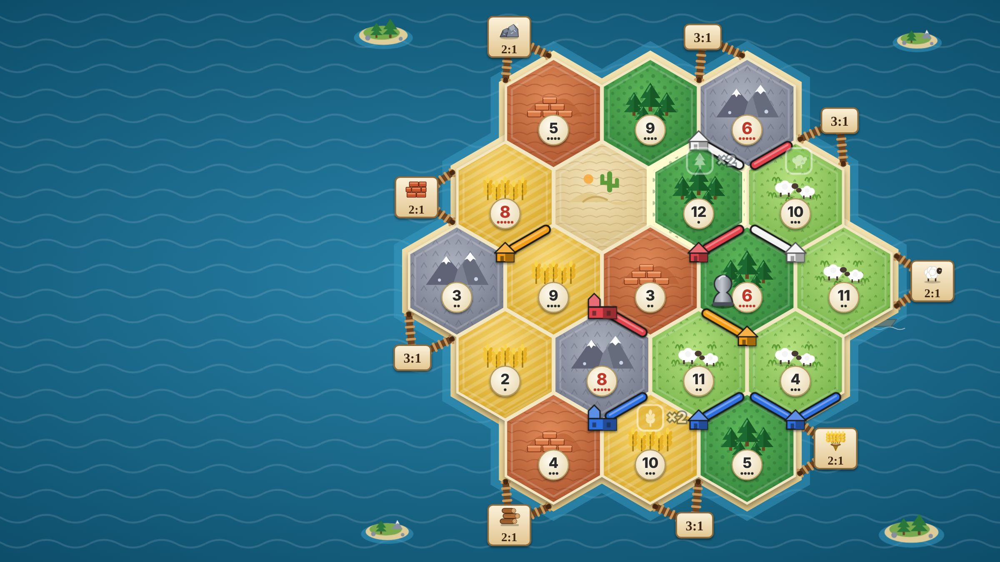
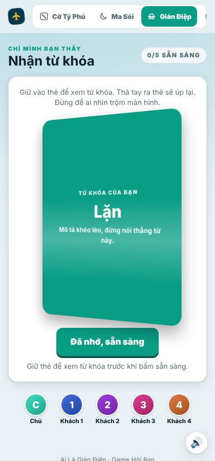
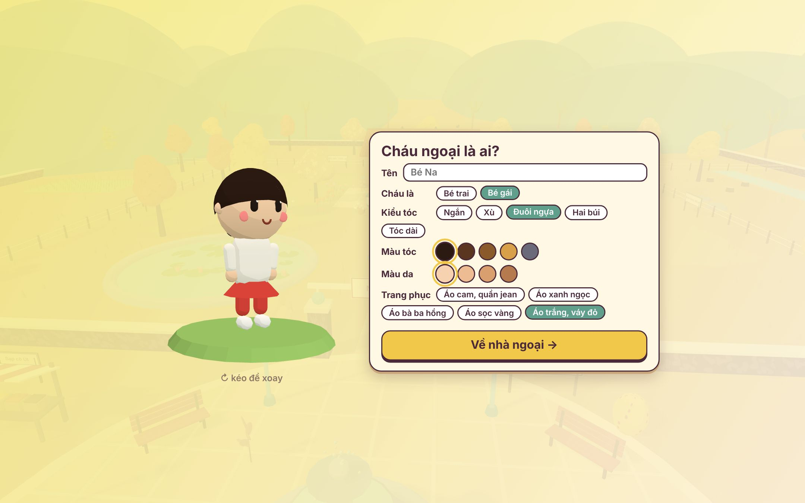
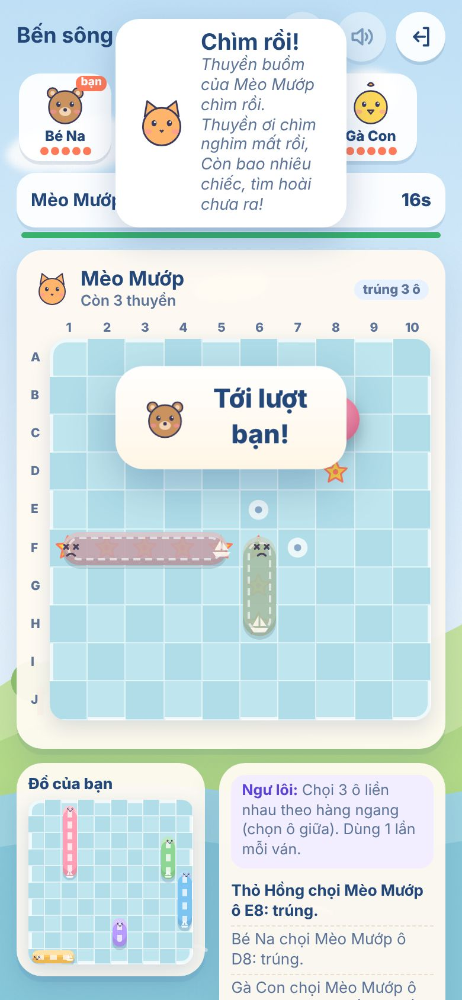

Board game cho hội bạn
6 trò mở ngay trên trình duyệt điện thoại, iPad và máy tính: Ma Sói, Gián Điệp, Chọi Bí Mật, Cờ Tỷ Phú, Đảo Khai Hoang và Ngoại Ơi. Không tài khoản, không cài đặt.
Ma Sói tự dẫn bằng giọng đọc
31 vai trong ba phe, từ 5 đến 24 người. iPad giữa bàn đọc lời dẫn; ai cũng xem vai và chọn ban đêm trên điện thoại riêng.
20 đến 40 phút một ván


Ai Là Gián Điệp, đoán ai cầm từ khác
3 đến 12 người, hơn 200 cặp từ. Từ khóa và phiếu bầu chỉ hiện trên máy của từng người.



Chọi Bí Mật, giấu đồ rồi chọi nhau
2, 4, 6 hoặc 8 người trên bàn 10×10. Bốn chủ đề, mỗi chủ đề một chiêu: Ngư lôi, Radar, Pháo hoa, Hàng rào.

Cờ Tỷ Phú với ba bàn cờ
Cần Thơ với chợ nổi và mỳ cay, Tây Du Ký, Showbiz Việt. Từ 2 đến 10 người, chung một máy hoặc online theo mã phòng.
30 đến 60 phút một ván

Đảo Khai Hoang, xây làng trên đảo lục giác
Thu gỗ, gạch, lúa, cừu, quặng; giao thương rồi xây đường, làng, thành phố. 3 đến 4 người, bản mở rộng 5 đến 6, có người chơi máy.

Ngoại Ơi, Cháu Về! Nông trại 3D chơi một mình.
Trồng sáu loại cây, câu cá, nuôi gà, tự xây nhà và mua thêm đất. Ván tự lưu trên máy.


iPad làm bàn chơi, điện thoại làm tay cầm
Máy chủ tạo phòng có mã 5 ký tự, mọi người nhập mã trên điện thoại. Ở Ma Sói, Gián Điệp và Chọi Bí Mật, máy chủ chọn chỉ làm bàn hoặc cũng chơi.
Thiếu người thì máy chơi thay ở Chọi Bí Mật và Đảo Khai Hoang.
Cách chơi
Mở trang, tạo phòng, gửi mã cho hội bạn là chơi. Không đăng nhập, không quảng cáo, không thu dữ liệu. Ván được giữ trên máy chủ phòng, nên đừng tải lại trang giữa ván.
Câu hỏi hay gặp
Cài đặt trên điện thoại
Không cần cài. Mở bằng Safari hay Chrome là chơi; bấm Chia sẻ rồi Thêm vào màn hình chính để mở nhanh.
Chơi khi mất mạng
Trò chơi chung một máy vẫn chạy sau lần mở đầu. Phòng online thì mọi máy cần có mạng.
Điện thoại rớt mạng giữa ván
Máy đó tự nối lại khi có mạng. Trong lúc chờ, Chọi Bí Mật và Gián Điệp cho máy chơi thay lượt.
Số người mỗi trò chơi
Ma Sói 5 đến 24, Gián Điệp 3 đến 12, Cờ Tỷ Phú 2 đến 10, Chọi Bí Mật 2 đến 8, Đảo Khai Hoang 3 đến 6, Ngoại Ơi một người.
